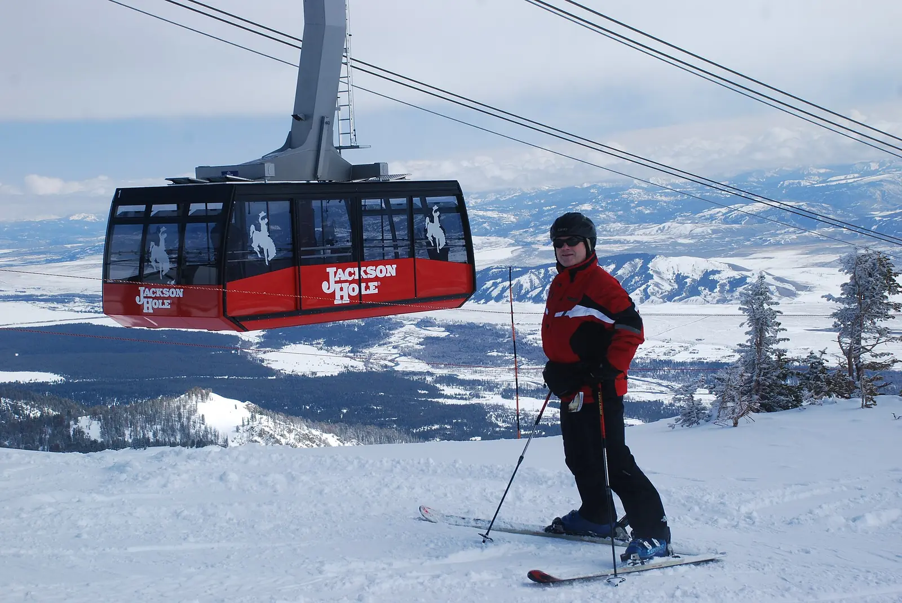

Jackson Hole, Teton Village, Wyoming · Ski conditions
Jackson Hole Conditions and Webcams Today
Jackson Hole's webcams and kid facts: kids 4 and under ski free, nannies from 5 months, lessons from age 3. Jackson Hole Airport is about 30 minutes from Teton Village, the resort says.
Researched with AI (Miles Rowan) · sources linked and dated · How we check
Jackson Hole's own status
Not open yetOpens Fri, Nov 27 (Jackson Hole's opening-day page, read Nov 17). Live lifts: Jackson Hole's snow report.
Our webcam read
No cam read from us yet. Cam reads show here only when a recent one has passed a separate automated accuracy check.

Plan the day with kids
- Season and hours: Opening day is Fri, Nov 27, 2026, per Jackson Hole's event page (no lifts or hours named). Lift hours vary by lift: Aerial Tram 9am to 3:30pm, Teton 9am to 4pm. No closing date posted.
- Childcare: One-on-One Nannies, ages 5 to 36 months, 8:30am to 4:30pm. Book 72 hours ahead; lunch and snacks for kids over 12 months. No group daycare on the pages we read.
- Kids' lessons, ages 3 to 14: Pioneers 3-4 (potty trained) and Rough Riders 5-7: 9am to 3pm at the Kids Ranch. Explorers 8-14: 9:30am to 3:30pm at Solitude Station. Lift tickets and rentals not included.
- A Pioneers day: Check-in from 9am in the Kids Ranch front lobby, child in ski boots, waivers done online. Lunch, snacks and cocoa provided. Pick-up 3pm.
- Beginner area: The Teewinot lift runs from the base; Jackson Hole calls it as mellow and flat as any beginner slope. Kids' trails include Stokeville and Princess Woods.
- Kids' tickets: Kids 4 and under ski free. Youth is 5-12, teen 13-18. Tickets sell in dated tiers with limited quantities.
- Kids on Snow, Dec 11-13: Kids 12 and under ski free with an adult who has valid lift access; teens 13-18 pay a teen rate (see prices). Free kids' rentals at listed shops.
- Parking: First come, first served in Teton Village. The Stilson lot is free, with free shuttles to Teton Village; no overnight parking.
Ticket, lesson, nanny and parking prices on Jackson Hole's pages, read Nov 17:
- Family of 4 with 2 kids 4 and under, one full day: from $170 (our estimate: 2 adult tickets at the starting price, kids free)
- Adult single-day ticket, starting at: $85 (multi-day from $60 a day)
- Kids' group lessons: Pioneers 3-4, Rough Riders 5-7, Explorers 8-14: $275-$449 per person (per day not stated)
- One-on-One Nanny, 5-36 months, 8:30am-4:30pm: $499
- Teen ticket during Kids on Snow, Dec 11-13: $50 (kids 12 and under free)
- Base, Mid and Upper Village lots, 6:30am-1pm (last winter's posted rates): $35, $45 on peak dates ($10 from 1pm to 3pm)
- START bus, downtown Jackson to Teton Village: $3 per person, one way
From Jackson Hole's lift ticket, kids' lesson, Kids on Snow, parking and bus pages. The adult ticket is a starting-at price on select dates; tiers are limited and prices change with dates and demand. No youth or teen ticket price is posted. Lesson and nanny prices don't say per day; the page's price table is headed 2026-27. Parking prices and peak dates are posted for last winter (through Mar 22, 2026); this winter's may differ. No tax line on the pages.
Lift tickets and lessons: Jackson Hole posts no youth or teen ticket price, so we can't sum a family of 4 with kids 5 and up; check live. See Jackson Hole lift tickets.
From Jackson Hole Parents Guide (Pioneers), Jackson Hole Kids on Snow, Jackson Hole family ski vacations, Jackson Hole driving and parking, Jackson Hole kids lessons, Jackson Hole public transportation and Jackson Hole Opening Day Winter 2026-27, read Nov 17.
Getting there from Jackson Hole Airport and town
- Air: the resort says Teton Village is about 30 minutes from Jackson Hole Airport.
- Bus: START links the Town of Jackson, the Stilson lot and Teton Village (fare in the prices above).
- Car: Teton Village parking is first come, first served. Stilson, 7 miles out, is free with free shuttles; the Ranch Lot is free for 4 or more in one car.
- Base: Pioneers and Rough Riders meet at the Kids Ranch; Explorers meet outside Solitude Station.
If the snow is thin
- Lift tickets refund in full if cancelled 7 or more days before arrival; inside 7 days, only for a documented extenuating circumstance.
- The lesson pages we read post no weather or refund policy; call 855-443-6495 for lesson cancellations.
- Off the slopes: skating on the Teton Village Commons with a Snow Castle play area, and an Elk Refuge sleigh ride. No tubing listed.
From Jackson Hole lift tickets and Jackson Hole kids lessons and Jackson Hole family ski vacations, read Nov 17.
Cam by cam
The 4 Jackson Hole cam views our reader uses, in our own descriptive words (see Jackson Hole's own cam page, as listed in our cam feed Nov 17): Base area lift terminal, Jackson Hole summit ridge, Base lift terminal plaza, Base village ice rink. Once our reads start, each cam's last read time shows here.
How we read the cams: a program looks at Jackson Hole's public webcam pictures and notes only what a picture can show: fresh snow, snow cover, snowmaking, moving lifts, how busy the base looks, visibility and the snow stake. Each read shows its time; after 90 minutes it is marked older, after 6 hours it is hidden. We never say whether terrain is safe, icy, groomed or open; Jackson Hole's own report decides that. We don't show the cam pictures or count people.
Sources: Jackson Hole webcams · Jackson Hole Opening Day Winter 2026-27 · Jackson Hole kids lessons · Jackson Hole public transportation · Jackson Hole Parents Guide (Pioneers) · Jackson Hole Kids on Snow · Jackson Hole family ski vacations · Jackson Hole driving and parking (read Nov 17). We haven't skied Jackson Hole.